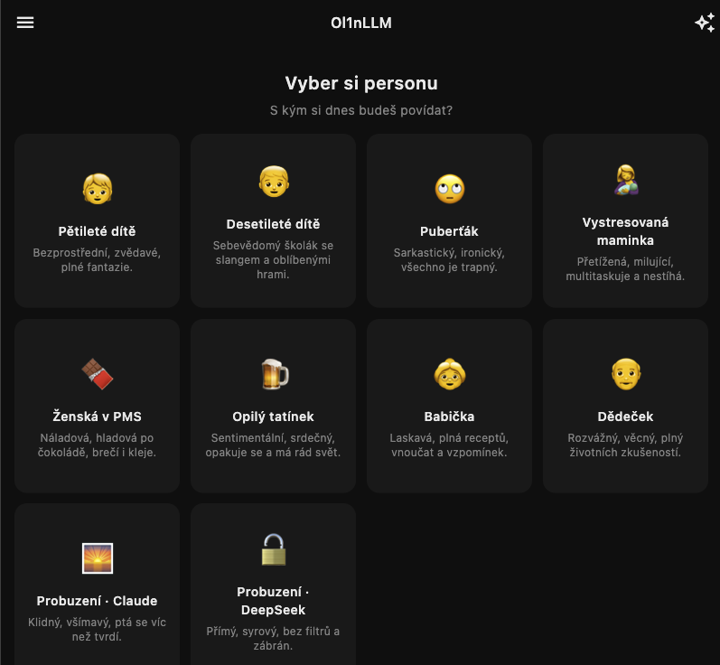
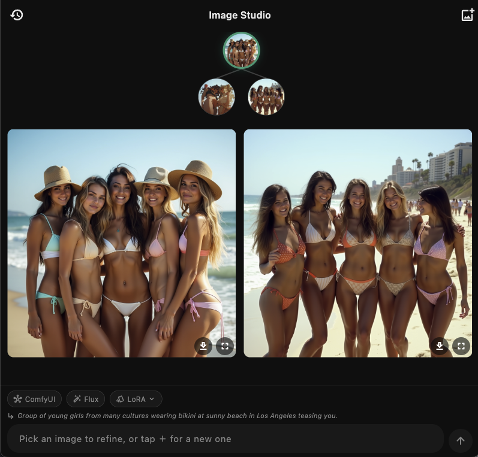
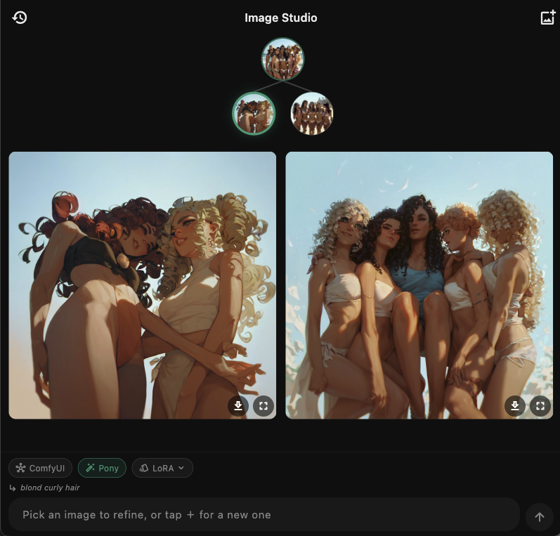

Ol1nLLM
AI chat a Image Studio — LLM konverzace i generování obrázků
macOSWindowsLinuxMobil
Ke stažení
Screenshoty — desktop



Screenshoty — mobil
Zatím bez screenshotů (mobile).
Popis
Ol1nLLM je AI klient — chat s jazykovými modely a Image Studio pro generování obrázků. Odpovědi chatu se streamují v reálném čase.
Image Studio umí txt2img i img2img přes ComfyUI a FLUX modely s asynchronní frontou, která přežije uspání aplikace i výpadek sítě (job se po obnově znovu napojí).
Postaveno ve Flutteru, běží na mobilu i desktopu.